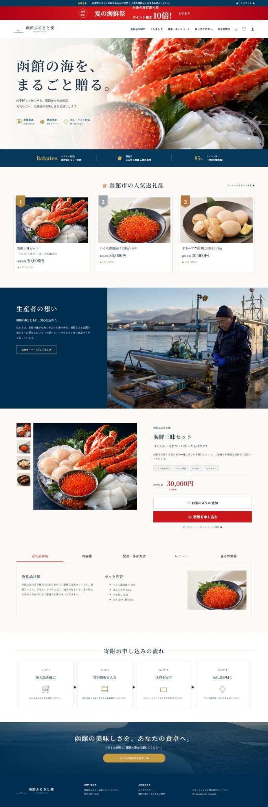
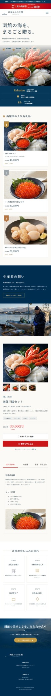

FULL PAGE
PC版ランディングページ
函館の海産物を主役に、人気返礼品、生産者の想い、商品詳細、寄附の流れまでを順番に読み進められる構成にしました。

PC版ランディングページ

スマートフォン版
LPデザイン、HTML、CSS、JavaScriptを使用した自主制作作品です。AIは構成整理、文章案、画像制作、コード確認の補助として活用し、最終的なデザインと調整は自分で行っています。
ファーストビューで函館らしい海産物を大きく見せ、商品の魅力を直感的に伝えました。
人気返礼品、寄附金額、生産者の想い、セット内容を順番に確認できる構成です。
寄附の流れとCTAボタンを分かりやすく配置し、迷わず進める導線を設計しました。